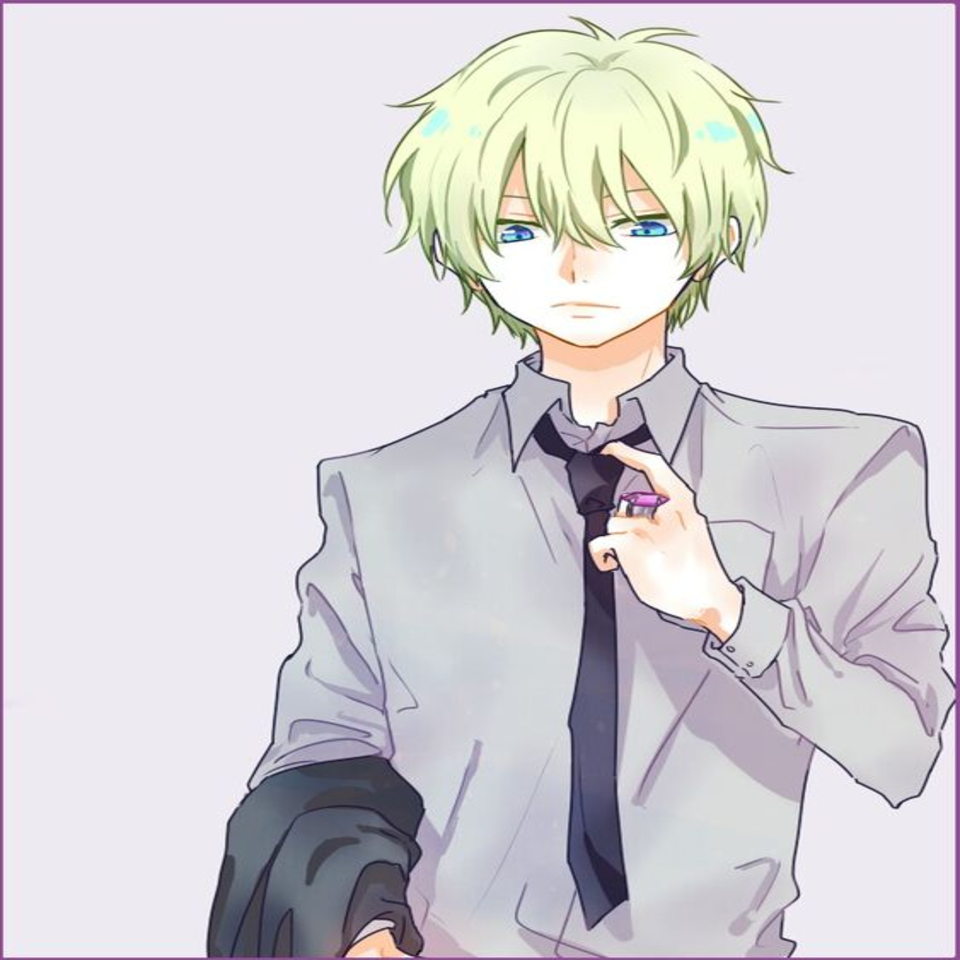
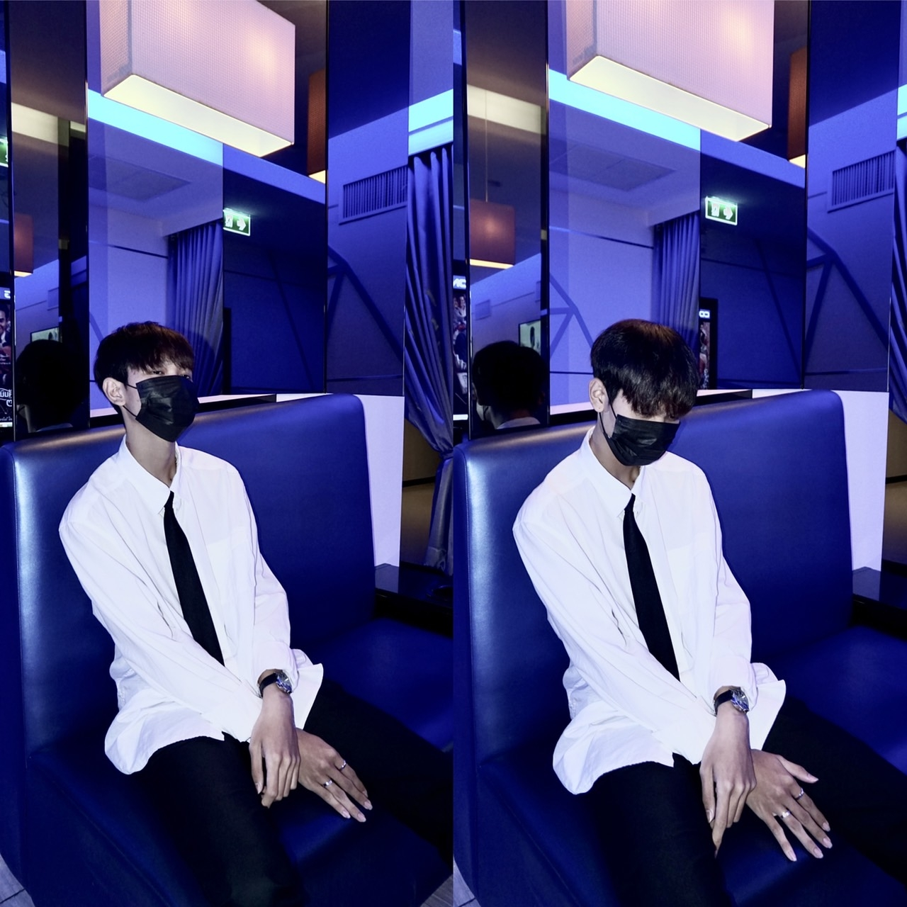
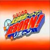

Hibari Kyotar

My Portfolio
About
As stated by others, Hibari is a scary character with little to no care for the well-being of others, preferring to do whatever it takes to get what he wants. He has full confidence in his own strength and power. This often leads to his opponents surprising him, as he doesn't think before attacking. As the head of Namimori Middle's Disciplinary Committee, Hibari uses authority to assault those that get on his nerves, including his own subordinates. Hibari is fiercely loyal to his school and its rules, going so far as to punish others for breaking them even if they aren't students or at the school, such as Genkishi. A lone wolf by nature, Hibari prefers to be alone and hates crowding. This leads him to beat anyone who he thinks is crowding around him too much. Hibari dislikes working together with anybody due to feeling indebted and restrained. He strives to pay them back as soon as possible. He cannot stand being restrained and absolutely refuses to allow himself to be controlled. For this same reason, he also refuses to follow order or direction from someone else unless there's absolutely no choice. A rare trait about him is his love for small animals, ranging from birds to hedgehogs. He is also shown to have a soft spot for I-Pin, having accepted her Valentine's Day chocolates with a smile and not taking money from Tsuna at a festival upon seeing I-Pin worried. And despite his refusal to consider Tsuna and his friends as his comrades, he had saved them on several occasions when they are in mortal danger, albeit distantly. Also, during the arc of the rainbow curse, Hibari stated that Reborn's team was full of people he wanted to fight, which can demonstrate that he is starting to develop a certain level of respect for them. Although Hibari appears to take little or no care for the well-being of others, Hibari is not heartless enough to sacrifice someone's life to fulfil his own ego, as shown when he didn't try to destroy Chrome's Cortina Nebbia after Demon Spade revealed that she'll die if the barrier is broken. Hibari's hatred of being controlled is so great that this alone made him overcome the effects of a poison that would kill even a wild elephant during the Battle of Sky. Reborn has already stated that it is this indomitable and solitary nature of Hibari that makes him perfect for the rank of Guardian of the Cloud,as this is the Guardian who protects and serves the family distantly and independently while going his own way unhindered. Future Hibari is shown to be more calm and observant about his opponents, and outwardly admits to hating illusionists because of his grudge towards Mukuro Rokudo, the first person to have defeated him. His desire to be alone and attack people that annoy him still remains, though his actions are shown with more thought. Future Hibari is also seen being more respectful to Future Tsuna, showing that he has accepted him as his boss, seen in one of the flashbacks of Shoichi Irie.
My Skills
Sport
Photography
Photoshop
Learning
Famaily
Girl friend
Age
Gender
Height
Weight
Blood Type
Nickname
My Reputation
Alaude. 1st Vongola
อลาวดี้ หล่อมากๆเลยครับ
Mr. Paiboon. CEO at Technical College.
ลูกศิษย์อาจารย์เก่งมากเลยครับ ผมชอบมากๆเลยครับ เดี๋ยวเทอมนี้ผมให้เกรด4นะครับ

Hibari Kyotar. 10th Vongola
ผมจะคอยติดตามท่านรุ่นที่10ตลอดไป!!
Personal Songs
- Song Name : Drawing days
- Anime : Katekyo Hitman Reborn!
- Time in song : 4:22
- Opening: 1
- Artist : Mukai Takaaki
-

Reborn Logo - Click to listen
- Song Name : Dive to World
- Anime : Katekyo Hitman Reborn!
- Time in song : 4:39
- Opening: 3
- Artist : Cherryblossom
-
Reborn Logo - Click to listen
Contact Me
19 M.2 Kaoprangram Loburi
Phone: +66 967056879
Email: tar0544az@gmail.com

Lets get in touch. Send me a message: